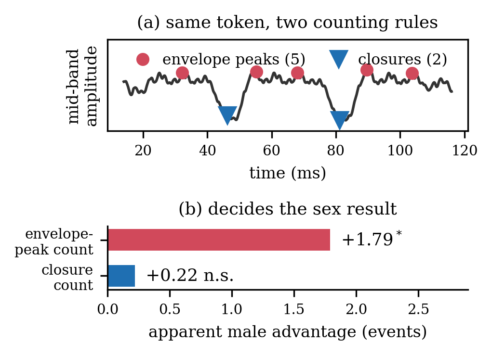
1 · What this is
We measure the Spanish trill /r/ by counting closures (the occlusion event, a mid-band energy minimum with a verified release) directly, instead of counting peaks of a rectified amplitude envelope. Across 3,560 tokens from 356 speakers in six corpora, the trill has a median of two closures and an inter-closure period near 36 ms. Phonotactic context is the only factor with a robust, medium effect; speaker sex shows none once closures are counted directly.
2 · Hear the unit: 1–3 closures
Synthetic trills with a known number of closures. The blue lines mark the closures the detector verifies (occlusion + a following release burst).
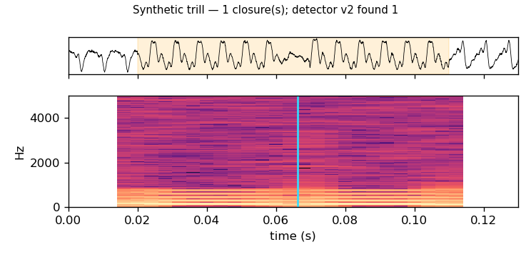
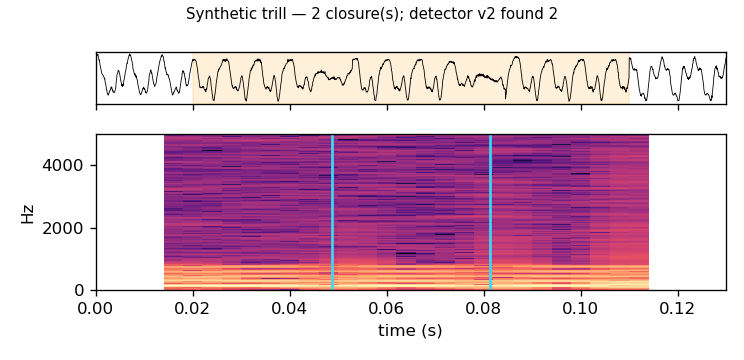
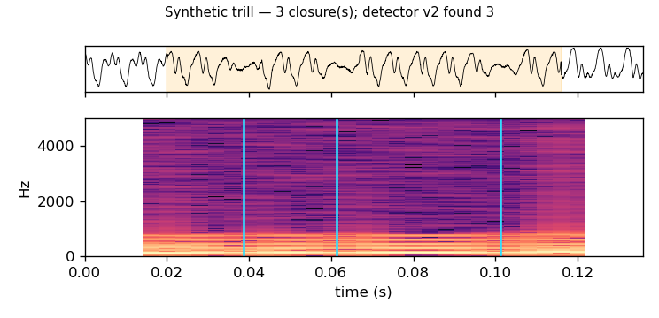
3 · Closures vs envelope peaks — the sex artifact
An envelope-peak counter marks a maximum for both the occlusion and its release, so it roughly doubles the count. On the same synthetic token the closure detector finds 2 closures (blue), while an envelope-peak counter marks 5 peaks (red dotted).
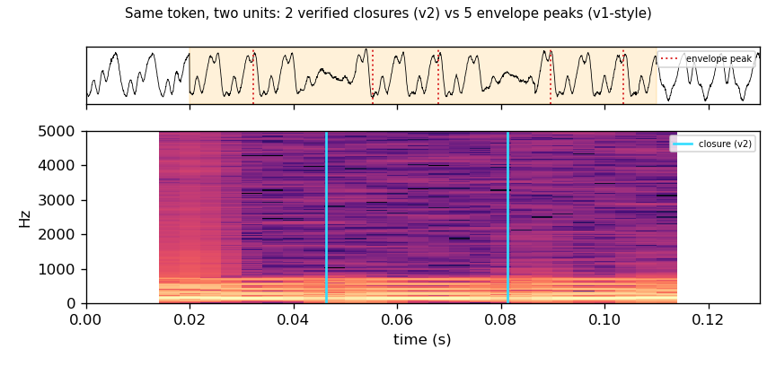
Why this creates a spurious sex effect
The size of that over-count depends on f₀ and harmonic density — and therefore on speaker sex. On the real tokens, the per-token over-count rises as f₀ falls (Spearman ρ = -0.37, n = 3429). The envelope-peak count is f₀-dependent; the closure count is not.
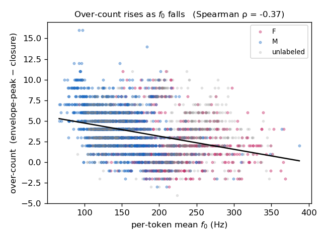
| measure | F | M | M−F |
|---|---|---|---|
| envelope-peak count | 4.33 | 6.12 | +1.79* |
| closure count (v2) | 1.80 | 2.02 | +0.22 n.s. |
Speakers with independent (metadata) sex labels, DIMEx100 excluded. *Mann–Whitney p<10⁻⁹, rank-biserial r = 0.53. The over-count absorbs +1.58 of the +1.79 gap, so the apparent sex effect is a counting artifact.
Hear a low- and a high-pitched trill
Identical 2-closure structure, different f₀ — the closure count should be the same for both.
4 · Phonotactic context (the one robust effect)
Intervocalic rr shows the fewest closures; onset trills (word-initial, post-/n,l,s/) show more. The independent autocorrelation cross-detector reproduces this ranking exactly and counts intervocalic trills higher (2.07 vs 1.81 closures), so the effect is not a closure-detection artifact.
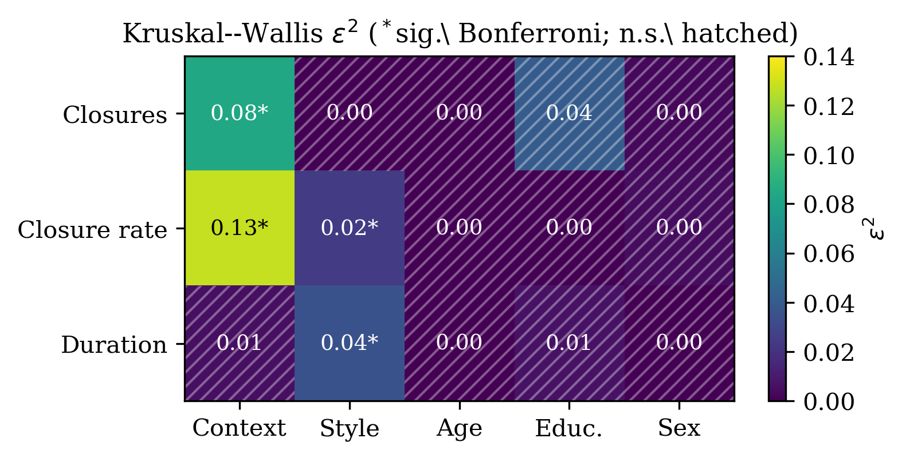
Kruskal–Wallis ε² for every predictor on closure count, closure rate and duration, on one scale. Context is the only predictor reaching a medium effect; sex is negligible. Non-significant cells (after Bonferroni) are hatched.
Context examples (Common Voice, CC0)
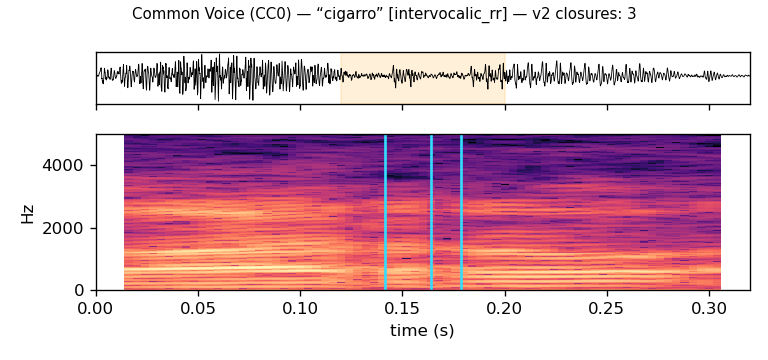
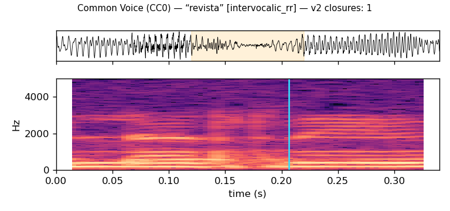
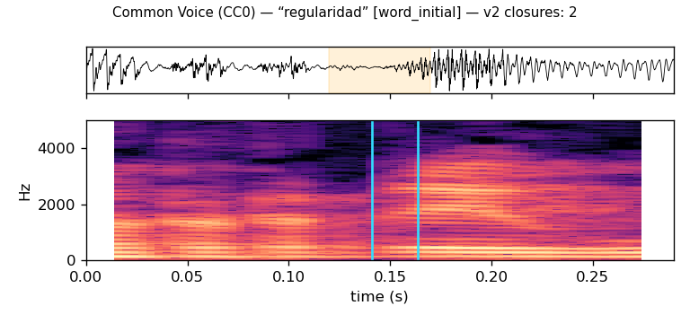
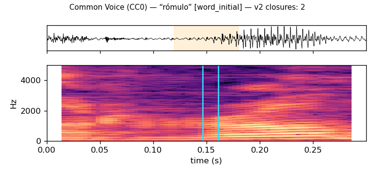
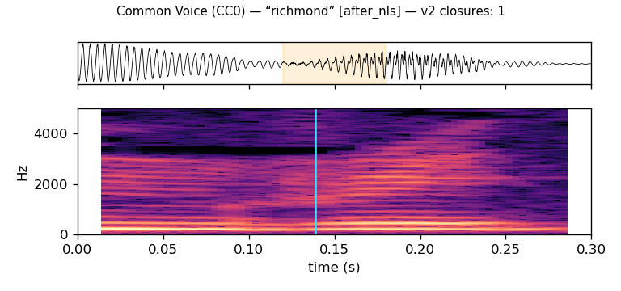
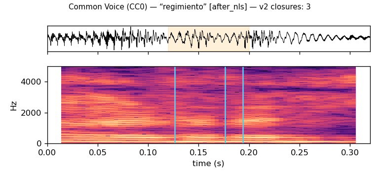
5 · Per-corpus validation
All six corpora pass literature-anchored validation. Each contact sheet tiles example tokens; a green border means the two independent detectors agree within ±1 closure, red means they disagree.
| Corpus | Tokens | Median n | Period (ms) | Agree. |
|---|---|---|---|---|
| TEDx | 1,481 | 2.0 | 35.0 | 95.6% |
| Heroico | 1,151 | 2.0 | 36.2 | 95.2% |
| Glissando | 762 | 2.0 | 37.5 | 91.2% |
| DIMEx100 | 81 | 1.0 | 30.0 | 92.6% |
| ALBAYZIN | 46 | 2.0 | 30.0 | 67.4% |
| PRESEEA | 39 | 1.0 | 35.0 | 79.5% |
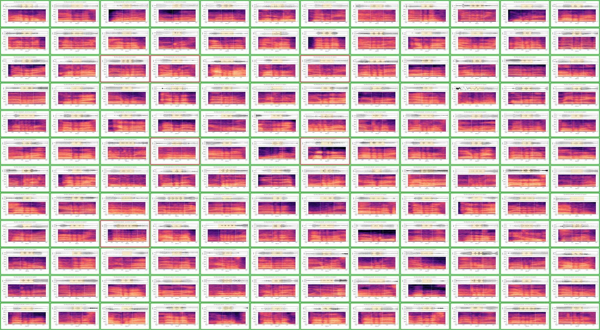
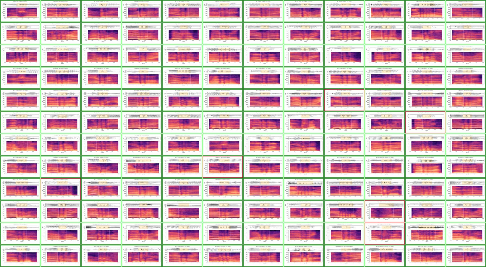
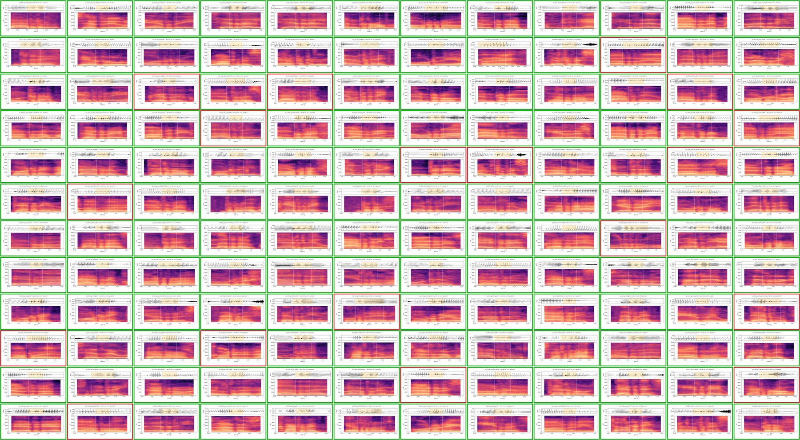
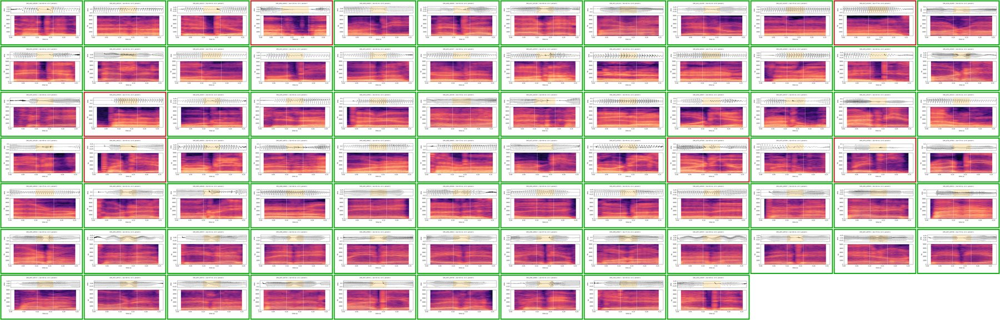
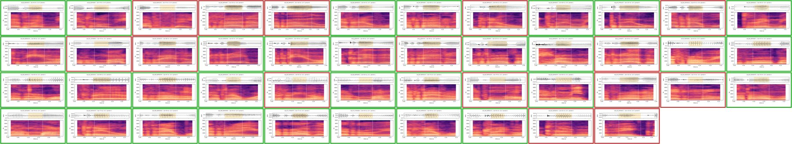
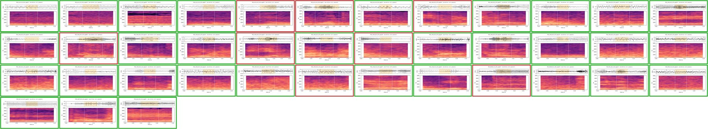
6 · Corpora & sample sizes
| Dataset | Speakers | Tokens | Region | Style |
|---|---|---|---|---|
| TEDx | 138 | 1,481 | Pan-Hispanic | spontaneous |
| Heroico | 112 | 1,151 | Mex/Sp/Ar | read |
| Glissando | 27 | 762 | Spain | read+spont. |
| DIMEx100 | 40 | 81 | Mexico | read |
| ALBAYZIN | 30 | 46 | Spain | read |
| PRESEEA | 9 | 39 | Spain | spontaneous |
Post-filter token (speaker) counts per cell (the balance behind the context analysis; word-initial is the smallest cell).
Tokens (speakers) per context × corpus
| corpus | intervocalic rr | after nls | word initial | all |
|---|---|---|---|---|
| tedx | 1241 (137) | 210 (90) | 30 (19) | 1481 (138) |
| heroico | 1034 (111) | 109 (57) | 8 (8) | 1151 (112) |
| glissando | 605 (27) | 141 (16) | 16 (11) | 762 (27) |
| dimex100 | 80 (39) | 1 (1) | 0 (0) | 81 (40) |
| albayzin | 25 (18) | 2 (2) | 19 (14) | 46 (30) |
| preseea | 35 (9) | 4 (2) | 0 (0) | 39 (9) |
| Total | 3020 (341) | 467 (168) | 73 (52) | 3560 (356) |
Tokens (speakers) per sex × context
| sex | intervocalic rr | after nls | word initial |
|---|---|---|---|
| F | 621 (68) | 133 (37) | 27 (20) |
| M | 1362 (136) | 236 (80) | 38 (24) |
Quality-filter retention (candidates → retained)
The filter keeps 21% of candidates overall but very little of the read/lab-heavy material (DIMEx100 1.3%): the analysed set is clean, periodic trill realisations, not all expected /r/ contexts.
| corpus | candidates | retained | % |
|---|---|---|---|
| TEDx | 4144 | 1481 | 35.7% |
| Heroico | 2573 | 1151 | 44.7% |
| Glissando | 2226 | 762 | 34.2% |
| DIMEx100 | 6285 | 81 | 1.3% |
| ALBAYZIN | 346 | 46 | 13.3% |
| PRESEEA | 1262 | 39 | 3.1% |
| Total | 16836 | 3560 | 21.1% |
| context | candidates | retained | % |
|---|---|---|---|
| intervocalic rr | 13641 | 3020 | 22.1% |
| after nls | 2374 | 467 | 19.7% |
| word initial | 821 | 73 | 8.9% |
Retention also depends on how the phone boundaries were obtained:
the native DIMEx100 .phn boundaries are about twice as narrow as MFA
boundaries (median candidate duration 37 vs ~70 ms), so most DIMEx100 candidates fall
under the 50 ms duration floor (and the 60 ms floor below which the periodicity score
is defined as 0); voicing is not the cause (98% of them pass the voicing rule).
| alignment source | candidates | retained | % |
|---|---|---|---|
| native .phn (DIMEx100) | 6285 | 81 | 1.3% |
| native SEO (ALBAYZIN) | 346 | 46 | 13.3% |
| native TextGrid (Glissando) | 2226 | 762 | 34.2% |
| MFA forced alignment (TEDx, Heroico, PRESEEA) | 7979 | 2671 | 33.5% |
| speech style | candidates | retained | % |
|---|---|---|---|
| read | 10787 | 1826 | 16.9% |
| spontaneous | 5548 | 1566 | 28.2% |
| task-oriented | 501 | 168 | 33.5% |
Quality-filter retention by speaker sex
Sex × inclusion is not associated (χ² p = 0.14; speaker-level retention p = 0.36), and male candidates are not less voiced than female ones (speaker-level p = 0.64). The filter does not drop male tokens preferentially, so the sex null is not an artifact of it.
| sex | candidates | retained | retention % | voicing (all) | voicing (dropped) |
|---|---|---|---|---|---|
| F | 2779 | 781 | 28.1% | 86.2 | 82.4 |
| M | 5507 | 1636 | 29.7% | 83.5 | 78.1 |
7 · Covariate-adjusted models and leave-one-corpus-out
Gaussian linear mixed models (REML) with a random speaker intercept; fixed effects: context (reference intervocalic rr), corpus (reference TEDx, dummies not shown), token duration (centred, per 10 ms) and speech style (reference spontaneous; corpus-constant except Glissando, so identified only within it). Sex (reference F) is added on the subset with a documented label (DIMEx100 excluded). The closure count is under-dispersed (var/mean ≈ 0.34), so a Poisson model would be misspecified.
| term | estimate | 95% CI | p |
|---|---|---|---|
| closure count, all tokens — n = 3560 tokens, 356 speakers, ICC = 0.13 | |||
| context[after_nls] | +0.221 | [+0.161, +0.281] | 5.5e-13 |
| context[word_initial] | +0.227 | [+0.075, +0.379] | 0.0035 |
| style[read] | +0.094 | [-0.056, +0.245] | 0.22 |
| dur_per10ms | +0.227 | [+0.217, +0.237] | 0 |
| closure rate (Hz), all tokens — n = 3560 tokens, 356 speakers, ICC = 0.13 | |||
| context[after_nls] | +2.753 | [+1.997, +3.510] | 9.7e-13 |
| context[word_initial] | +2.979 | [+1.058, +4.899] | 0.0024 |
| style[read] | +0.952 | [-0.959, +2.864] | 0.33 |
| dur_per10ms | -0.206 | [-0.330, -0.081] | 0.0012 |
| closure count, documented-sex subset — n = 2417 tokens, 217 speakers, ICC = 0.10 | |||
| context[after_nls] | +0.228 | [+0.159, +0.298] | 1.2e-10 |
| context[word_initial] | +0.227 | [+0.060, +0.393] | 0.0075 |
| style[read] | +0.093 | [-0.056, +0.242] | 0.22 |
| sex[M] | +0.037 | [-0.056, +0.129] | 0.44 |
| dur_per10ms | +0.230 | [+0.219, +0.242] | 0 |
| closure rate (Hz), documented-sex subset — n = 2417 tokens, 217 speakers, ICC = 0.12 | |||
| context[after_nls] | +2.745 | [+1.874, +3.616] | 6.5e-10 |
| context[word_initial] | +2.865 | [+0.775, +4.955] | 0.0072 |
| style[read] | +0.945 | [-0.970, +2.861] | 0.33 |
| sex[M] | +0.619 | [-0.607, +1.845] | 0.32 |
| dur_per10ms | -0.199 | [-0.343, -0.055] | 0.0068 |
Leave-one-corpus-out (context effect)
Speaker × context aggregation and Kruskal–Wallis ε², as in the paper, with one corpus removed at a time. Intervocalic rr stays the context with the fewest closures and the slowest rate in 6/6 hold-outs; ε² spans 0.04–0.13 (count) and 0.08–0.16 (rate): the direction is invariant, the magnitude small-to-medium.
| held-out corpus | tokens / speakers | mean closures ivc / nls / w-init | ε² count | ε² rate | intervocalic lowest? |
|---|---|---|---|---|---|
| none (all corpora) | 3560 / 356 | 1.81 / 2.21 / 2.30 | 0.083 (medium) | 0.128 (medium) | yes |
| dimex100 | 3479 / 316 | 1.91 / 2.22 / 2.30 | 0.059 (small) | 0.112 (medium) | yes |
| albayzin | 3514 / 326 | 1.83 / 2.23 / 2.56 | 0.101 (medium) | 0.146 (large) | yes |
| glissando | 2798 / 329 | 1.80 / 2.22 / 2.23 | 0.080 (medium) | 0.161 (large) | yes |
| preseea | 3521 / 347 | 1.83 / 2.24 / 2.30 | 0.086 (medium) | 0.134 (medium) | yes |
| tedx | 2079 / 218 | 1.73 / 2.05 / 2.05 | 0.045 (small) | 0.076 (medium) | yes |
| heroico | 2409 / 244 | 1.72 / 2.26 / 2.33 | 0.130 (medium) | 0.127 (medium) | yes |
8 · Parameter sweeps
Quality-filter sweep (periodicity × voicing; duration fixed at [50, 200] ms)
Speaker-level Mann–Whitney for sex (p, rank-biserial r) and speaker × context Kruskal–Wallis for context (p, ε²); uncorrected p-values. The production point is periodicity ≥ 0.40, voicing ≥ 80%.
| periodicity ≥ | voicing ≥ (%) | tokens | median closures | ε² context | p context | p sex | r sex |
|---|---|---|---|---|---|---|---|
| 0.30 | 70 | 4355 | 2 | 0.082 | 2e-12 | 0.07 | 0.15 |
| 0.30 | 80 | 4078 | 2 | 0.068 | 7e-10 | 0.08 | 0.14 |
| 0.30 | 90 | 3617 | 2 | 0.066 | 4e-09 | 0.07 | 0.15 |
| 0.35 | 70 | 4082 | 2 | 0.088 | 7e-13 | 0.16 | 0.11 |
| 0.35 | 80 | 3824 | 2 | 0.078 | 7e-11 | 0.18 | 0.11 |
| 0.35 | 90 | 3400 | 2 | 0.076 | 5e-10 | 0.13 | 0.13 |
| 0.40 | 70 | 3794 | 2 | 0.092 | 6e-13 | 0.20 | 0.10 |
| 0.40 | 80 | 3561 | 2 | 0.083 | 3e-11 | 0.20 | 0.10 |
| 0.40 | 90 | 3172 | 2 | 0.077 | 8e-10 | 0.19 | 0.11 |
| 0.45 | 70 | 3497 | 2 | 0.078 | 8e-11 | 0.27 | 0.09 |
| 0.45 | 80 | 3292 | 2 | 0.077 | 3e-10 | 0.26 | 0.09 |
| 0.45 | 90 | 2947 | 2 | 0.074 | 2e-09 | 0.21 | 0.11 |
| 0.50 | 70 | 3158 | 2 | 0.061 | 2e-08 | 0.60 | 0.04 |
| 0.50 | 80 | 2978 | 2 | 0.064 | 2e-08 | 0.65 | 0.04 |
| 0.50 | 90 | 2669 | 2 | 0.062 | 9e-08 | 0.47 | 0.06 |
Detector sweep (closure prominence × closure threshold)
For each cell, how many of the six corpora land within the literature-anchored ranges (median 1–3 closures, median period 30–50 ms, cross-detector agreement ≥ 65%). The production point is 5 dB, 0.40.
| prominence (dB) | threshold | corpora within literature ranges | outside |
|---|---|---|---|
| 3 | 0.30 | 5 / 6 | albayzin |
| 3 | 0.40 | 6 / 6 | — |
| 3 | 0.50 | 6 / 6 | — |
| 5 | 0.30 | 5 / 6 | albayzin |
| 5 | 0.40 | 6 / 6 | — |
| 5 | 0.50 | 6 / 6 | — |
| 8 | 0.30 | 5 / 6 | albayzin |
| 8 | 0.40 | 6 / 6 | — |
| 8 | 0.50 | 6 / 6 | — |
9 · Reproducibility
The complete pipeline — the closure detector, the fixed quality filter (duration ∈ [50, 200] ms, voicing ≥ 80 %, envelope-periodicity ≥ 0.40), the independent period cross-detector, the statistical scripts and the test suite — is public at https://github.com/MateoCamara/trillscope. It is deterministic and reproducible from the candidate token tables plus the source audio.
Implementation details asked for by the reviewers:
- Periodicity refinement (dropping a closure whose two adjacent intervals both deviate by more than 2 SD from the token's median interval) runs only when a token has at least three closures; with one or two closures it is a no-op.
- Release verification takes the maximum of the mid-band envelope in the 3–25 ms window after a closure candidate; if it does not reach 40% of the local maximum the candidate is discarded. One release per closure.
- Segment boundaries. Detection runs on the aligned segment padded by ±20 ms so that a release just past the boundary can be verified, but only closures whose time falls inside the original boundaries are kept.
- Periodicity score is undefined (set to 0) for regions shorter than 60 ms, so the effective duration floor of the quality filter is 60 ms.
- Thresholds were set on synthetic trills and a first pass over the corpora, then frozen; the sweeps above show the conclusions do not depend on them. The synthetic suite (16 tests) checks exact-count recovery, jitter tolerance, vowel rejection and the absence of double counting.